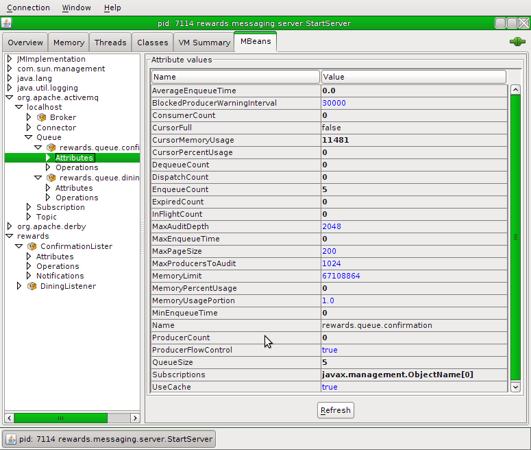
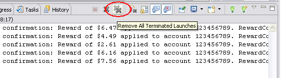

What you will learn:
Problems caused by non-transactional JMS message reception
How local JMS transactions can help to avoid some, but not all of these problems
Specific subjects you will gain experience with:
Local JMS transaction management in Spring
Estimated time to complete: 30 minutes
If you feel you have a good understanding of the material, you can
work with the TODOs listed in the Tasks view in
Eclipse/STS. To display them, click on Window -> Show view -> Tasks.
Alternatively, the next section contains more detailed step-by-step
instructions. Each task in STS is also described in more detail by a
corresponding section in the step-by-step instructions
Start the server by running the StartServer class, enabling JMX by adding '-Dcom.sun.management.jmxremote' to the VM arguments.
Run the StartSender class in the rewards.messaging.client.sender package to send some messages.
Inspect the result in JConsole. The dining queue should have 0 messages, and the confirmation queue should have 5 messages. The ConfirmationLister should show 5 confirmations in the database. Run the StartReceiver process to consume all the 5 confirmation messages.
Cause an error after receiving the message. In the JConsole, navigate to the rewards/DiningListener MBean and set its CauseErrorAfterReceiving attribute to true. Run StartSender again to send 5 new dining request messages. Switch back to JConsole, and verify that all the messages are lost (check the dining queue, confirmation queue, and database to observe the results). Stop the server by pressing Enter in the Console view.
Use a local JMS transaction for receiving the messages. Open the JmsRewardsConfig configuration class,
and find the jmsListenerContainerFactory bean.
Set the sessionTransacted flag to true (TODO 01).
Start the server again, connect using JConsole and set the CauseErrorAfterReceiving attribute of the DiningListener to true again. Run StartSender again to send 5 more new messages. Use JConsole to verify the results (check dining queue, confirmation queue, database, and notice a new dead letter queue that has the 5 messages).
Cause an error after processing the message. Using JConsole, reset the CauseErrorAfterReceiving
flag by setting it to false again, but this time set the CauseErrorAfterProcessing flag to true.
Run StartSender again. Observe the effect in JConsole (check the queues and database).
Cause an error after sending the confirmation message. Reset the CauseErrorAfterProcessing flag back to false and set the
CauseErrorAfterSending flag to true. Run StartSender, and observe the results in JConsole again.
After you finished, stop the server by pressing Enter in the Console window.
The instructions for this lab are organized into sections. In the first section, you'll look at an existing application that doesn't use JMS transactions which receives message from a JMS queue, stores them in a database and sends some response messages. You will learn what errors this can cause. In the second section, you'll rework the application to use local JMS transactions to solve some of these errors. You'll see in what scenarios local JMS transactions can help to solve all issues, and when global transaction might be necessary instead.
The existing application performs the following steps:
Picks up Dining request messages from a
JMS queue
Processes these requests using the
RewardNetwork
Sends the resulting RewardConfirmation
as a response message to another queue
Ideally, these operations should be atomic: either all should succeed, or none of them should. Let's see why this is currently not the case.
Open the jms-tx project. This project
consists of three parts: a server that implements
the use case as described above, a sender that
sends a couple of new Dining requests as JMS
messages to the request queue, and a receiver
that takes confirmation messages from the confirmation queue and
prints them. Our interest is in the server. Inspect the
InfrastructureConfig configuration class. Notice how it
defines a local transaction manager for an embedded Derby database
(the DataSourceTransactionManager) and an
embedded ActiveMQ connection factory with a broker that can be
accessed from other applications using a TCP connector.
Now open the JmsRewardsConfig class. This
config class imports the bean definitions for the reward network
application and defines a JmsListenerContainerFactory
which creates DefaultMessageListenerContainer instances.
But where is the JMS listener? Open the DiningListener
and look at the onMessage method: it's annotated with
the JmsListener annotation. The DiningListener
processes messages from a
queue called rewards.queue.dining.
Have a look at the content of the onMessage method
and confirm that the
code implements the flow described before. Responses are sent
to a queue called rewards.queue.confirmation, as
configured in the JmsTemplate that's injected
into the DiningListener. Notice that this class
has various flags that can be set to cause errors at runtime: you'll
use those in the next section. When you understand the setup of the
server application, move to the next step.
Start the server by running the
StartServer class. This will bootstrap the
database and JMS broker, and the server will wait for messages to come
in on the rewards.queue.dining queue.
![[Warning]](images/warning.png) | Warning |
|---|---|
| To stop the server when you're done with it, click in the Console view and press Enter. *Don't* press the Terminate stop button, as that will not properly close down the Derby database! In contrast to most other labs, we use persistent data in this lab and killing the VM will cause issues when restarting the database. |
Since we want to use JMX to examine the server instance, stop it now, as we just described. Then, go to Run... | Run Configurations... Select Start Server under Java Application, and add '-Dcom.sun.management.jmxremote' to the VM arguments; click Run.
To send some messages to the server, run the
StartSender class in the
rewards.messaging.client.sender package. This
class simply sends five messages to the dining queue for processing
and then exits. In the Console view for the
StartServer process, you should now see output
similar to this:
...
Started server, press Enter to stop
DEBUG: rewards.messaging.server.DiningListener -
Received Dining with amount $80.93
DEBUG: rewards.messaging.server.DiningListener -
Sent response with confirmation nr 1
DEBUG: rewards.messaging.server.DiningListener -
Received Dining with amount $56.12
DEBUG: rewards.messaging.server.DiningListener -
Sent response with confirmation nr 2
DEBUG: rewards.messaging.server.DiningListener -
Received Dining with amount $32.64
DEBUG: rewards.messaging.server.DiningListener -
Sent response with confirmation nr 3
DEBUG: rewards.messaging.server.DiningListener -
Received Dining with amount $77.05
DEBUG: rewards.messaging.server.DiningListener -
Sent response with confirmation nr 4
DEBUG: rewards.messaging.server.DiningListener -
Received Dining with amount $94.50
DEBUG: rewards.messaging.server.DiningListener -
Sent response with confirmation nr 5
That means the server started successfully, after populating the database with some initial schema and data, and then received and processed five messages.
What we expect now is that the database contains five reward
confirmations, and that the
rewards.queue.confirmation queue contains five
messages. Let's confirm this by connecting to the server using
JConsole. From the bin directory of your local
Java SDK, start jconsole and connect to the
running StartServer process.
![[Tip]](images/tip.png) | Tip: Connecting using JConsole |
|---|---|
If you can not see the process you started in JConsole (in the 'Local Process' section) or the connect times out, it is possible you do not have adequate security rights in your environment. In this case, you will have to connect to the process via a socket connection instead. In the VM arguments tab of your launch configuration, add the following arguments:
-Dcom.sun.management.jmxremote.port=8181
-Dcom.sun.management.jmxremote.authenticate=false
-Dcom.sun.management.jmxremote.ssl=false
-Djava.rmi.server.hostname=127.0.0.1
Then restart the process, and connect via JConsole by using the 'Remote Process' selection, specifying a host of localhost and port of 8181. |
Switch to the MBeans tab. Notice that there is an org.apache.activemq node. Navigate to its localhost/Queue subnode and you will see the two queues that our application is using. Click on the Attributes node under each queue and inspect the QueueSize attribute. The dining queue should have 0 messages, as they're all processed, and the confirmation queue should have 5.
|  |
Now navigate to the rewards node and check the Attributes of the ConfirmationLister you see under that. It should tell you that there are 5 confirmations in the database. You can also invoke the listAllConfirmations operation to see their contents.
![[Note]](images/note.png) | Note |
|---|---|
If you're wondering how the ConfirmationLister and
DiningListener are exported as MBeans without using the
|
So far so good: as a final step, run the
StartReceiver process to consume the 5
confirmation messages. When you're done, remove all terminated
processes from the Console view by pressing the double X
button.
|  |
When everything works as expected, the current application behaves just fine. However, with various JMS and JDBC operations involved, there are chances that things don't go as planned at runtime. In a typical production environment, both the database server and message broker would be running on a remote server, for example: that means that a network error could cause some operations to fail. In this section you'll simulate those failures to observe the result in the application.
Currently, the jmsListenerContainerFactory bean
is in charge of creating the message listener container used
by the DiningListener. This message listener
container performs the reception of the messages.
Notice that there's no transaction management configured: that
means the receive will not be performed in a transaction managed from
the application. To show how this can cause errors, switch back to
JConsole again. Navigate to the
rewards/DiningListener MBean and click on its
Attributes node. Here, you can set the various error flags to
true to cause failures at particular points in
the process implemented by the
DiningListener.
Set its CauseErrorAfterReceiving attribute
to true and then start the
StartSender application again to send 5 new
dining request messages.
In the Console view, you'll see something like this for each message:
DEBUG: rewards.messaging.server.DiningListener -
Received Dining with amount $80.93
WARN : org.springframework.jms.listener
.DefaultMessageListenerContainer -
Execution of JMS message listener failed,
and no ErrorHandler has been set.
java.lang.RuntimeException: error after receiving dining
with amount $80.93
at rewards.messaging.server.DiningListener
.onMessage(DiningListener.java:48)
...
Now switch back to JConsole and look at the number of confirmations in the database by inspecting the NrOfConfirmations attribute of the ConfirmationLister: you'll see that it hasn't changed. This is of course exactly what we expected: we threw an error before the processing started. However, also have a look at the QueueSize of the rewards.queue.dining: that's still 0. This means that we have lost all the messages!
In most applications, this is simply not acceptable: if something goes wrong during the processing of a received message, the message should simply be put back on the queue so it can be reprocessed later. There's a number of ways to ensure this, but Spring makes this particularly easy. Stop the server by pressing Enter in the Console view and move to the next step to see how this is done.
Open the JmsRewardsConfig and find
the jmsListenerContainerFactory bean.
Set the sessionTransacted flag of this bean to true
(TODO 01).
This tells Spring to start a local JMS
transaction for the reception of the message. Moreover, this
transaction will only be committed *after* the local JDBC transaction
that's used for processing the message and updating the database. That
means that if the processing fails, the message will not be
lost.
Start the server again, connect using JConsole and set the CauseErrorAfterReceiving attribute of the DiningListener to true again. Now send 5 more messages. This time, the output you see in the Console will be different and looks like this for each message:
DEBUG: rewards.messaging.server.DiningListener -
Received Dining with amount $80.93
WARN : org.springframework.jms.listener
.DefaultMessageListenerContainer -
Execution of JMS message listener failed,
and no ErrorHandler has been set.
java.lang.RuntimeException: error after receiving dining
with amount $80.93
at rewards.messaging.server.DiningListener
.onMessage(DiningListener.java:48)
...
DEBUG: rewards.messaging.server.DiningListener -
Received Dining with amount $80.93 (redelivered 1 times)
WARN : org.springframework.jms.listener
.DefaultMessageListenerContainer -
Execution of JMS message listener failed,
and no ErrorHandler has been set.
java.lang.RuntimeException: error after receiving dining
with amount $80.93
at rewards.messaging.server.DiningListener
.onMessage(DiningListener.java:48)
...
DEBUG: rewards.messaging.server.DiningListener -
Received Dining with amount $80.93 (redelivered 2 times)
WARN : org.springframework.jms.listener
.DefaultMessageListenerContainer -
Execution of JMS message listener failed,
and no ErrorHandler has been set.
java.lang.RuntimeException: error after receiving dining
with amount $80.93
at rewards.messaging.server.DiningListener
.onMessage(DiningListener.java:48)
...
DEBUG: rewards.messaging.server.DiningListener -
Received Dining with amount $80.93 (redelivered 3 times)
WARN : org.springframework.jms.listener
.DefaultMessageListenerContainer -
Execution of JMS message listener failed,
and no ErrorHandler has been set.
java.lang.RuntimeException: error after receiving dining
with amount $80.93
at rewards.messaging.server.DiningListener
.onMessage(DiningListener.java:48)
...
Notice how the same message is delivered a total of four times? Look back at the messages and note the (redelivered # times) comment on each of the last three lines.
What you see happening here is that after the error, the message
is put back in the queue. If this error was caused by a temporary
situation, like a network hiccup that prevented the application from
communicating with the database, a redelivery would probably succeed.
This is typically called a transient error. You
can configure ActiveMQ on how it should do redeliveries: how often
should it retry before giving up, how long should it wait between
redeliveries, etc. If you're interested, have a look in
InfrastructureConfig at the properties that
are available on the
org.apache.activemq.RedeliveryPolicy that's
configured.
However, our error is not transient, so the redelivery doesn't help. To prevent a message that cannot be processed from blocking the entire application, ActiveMQ will move the message to a so-called dead letter queue after the maximum number of redeliveries it's configured with (3, in our case). Use JConsole to verify that there's a new dead letter queue defined now that has our 5 messages.
 |
This is much better, as messages don't get lost anymore. However, it doesn't take care of all problems, as we'll see in the next step.
Using JConsole, reset the
CauseErrorAfterReceiving flag by setting it to
false again, but this time set the
CauseErrorAfterProcessing flag to
true. As you can see in the code for the
DiningListener, this causes an exception to be
thrown after the call to
rewardAccountFor(Dining), which means that
the database has already been updated. An example of how this could
happen in a real system is when a database transaction commits
successfully, but the subsequent JMS transaction commit fails because
of a network issue.
Run the StartSender application again to
send 5 new messages. The output in the console will be very similar to
what you just saw; each message will be redelivered three times and
then sent to the dead letter queue. However, check the
NrOfConfirmations attribute of the
ConfirmationLister again: it has just increased
by 20! What happened is that each message was received, processed, and
then rolled back to be put back in the queue four times (1 delivery
plus 3 redeliveries). The rollback of the JMS transaction happens
after the local database transaction has already
been committed!
Using local transactions, there's not much we can do to avoid these duplicate messages. Had processing been idempotent, then this wouldn't matter, but in our case we want to avoid processing a message more than once. One way to deal with this is to detect redeliveries and don't process them if they have been processed successfully already. To completely avoid these duplicates however, we need a *global transaction*: only this guarantees so-called once-and-once-only delivery.
Also try what happens if you reset the
CauseErrorAfterProcessing flag back to false and set the
CauseErrorAfterSending flag to
true. In this case, the sending happens with a
transactional JmsTemplate which will
automatically use the same JMS Session as was
used for receiving the Dining message: this
means that the JMS transaction will still roll back, including the
sending of the confirmation, but only after the database transaction
has been committed already. The net effect is the same as with the
previous step. Had we not used a transactional template, then the
confirmations would be sent while the receive would be rolled back.
That would be pretty bad: you'd inform clients that you've processed
their requests once, where in reality you'll see them again because
they were put back on the queue.
Stop the server now by pressing Enter in the Console window. In the next module, you'll see how a global transaction can help us out if we require once-and-once-only delivery guarantees.